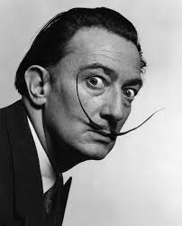

Bookstore
Art
Artists
Salvador Dali
Dali was a skilled draftsman, best known for the striking and bizarre images in his surrealist work. HIs painterly skills are often attributed to the influence of Renaissance masters. His best known work, The Persistence of Memory, was completed in August 1931. Dali's expansive artistic repertoire included film, sculpture, and photography, in collaboration with a range of artists in a variety of media.
Engineering
Computer Engineering
Tim Berners-Lee